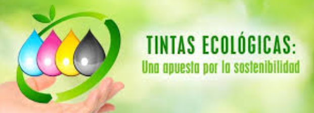

tenenemos como mision:Ofrecer tintas ecológicas innovadoras y sostenibles, elaboradas a partir de frutas y verduras, que permitan a artistas y creativos expresar su imaginación sin comprometer la salud del planeta. Nos comprometemos a promover prácticas responsables y a educar sobre la importancia del uso de productos naturales en la industria del arte.
y como vision : Ser la empresa líder en el desarrollo y comercialización de tintas ecológicas a nivel global, inspirando a una nueva generación de artistas a elegir opciones sostenibles. Aspiramos a transformar la manera en que se crean y se utilizan los productos de arte, contribuyendo a un futuro más limpio y saludable para nuestro entorno y las comunidades que nos rodean
Inicio 